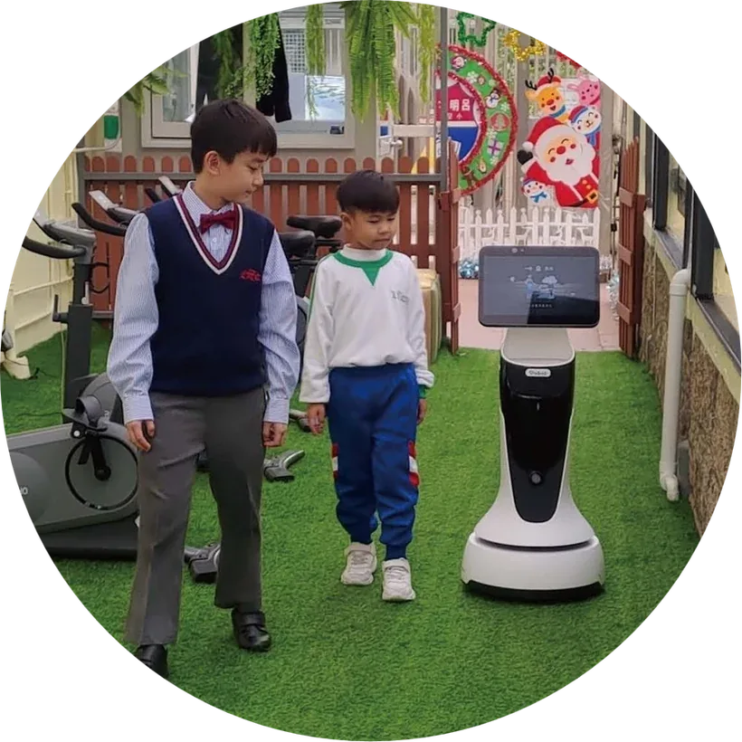
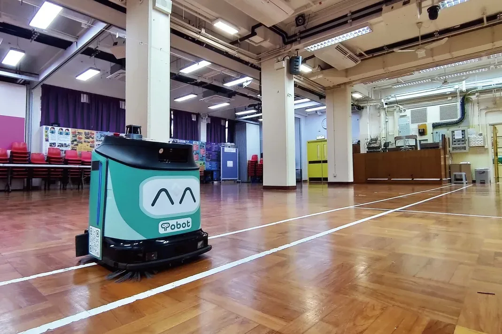
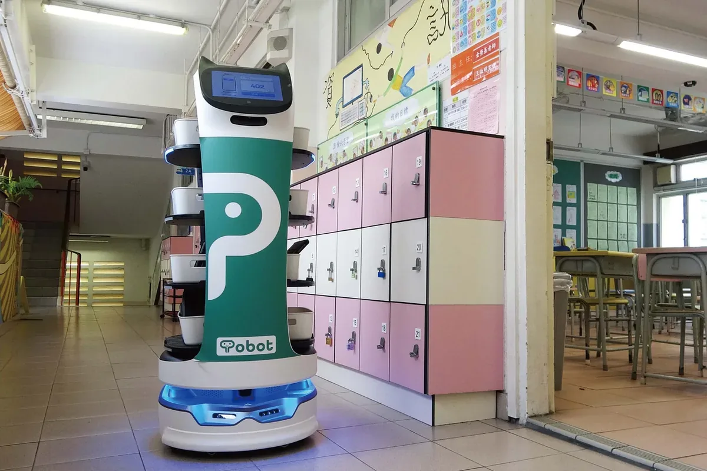
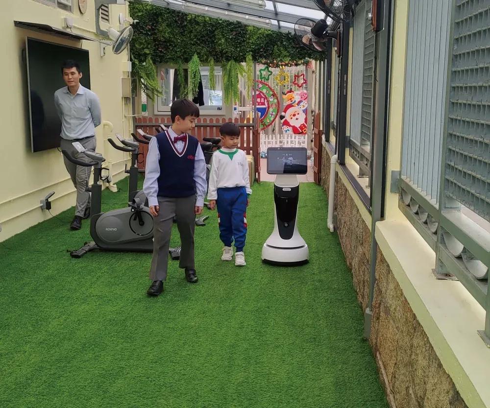
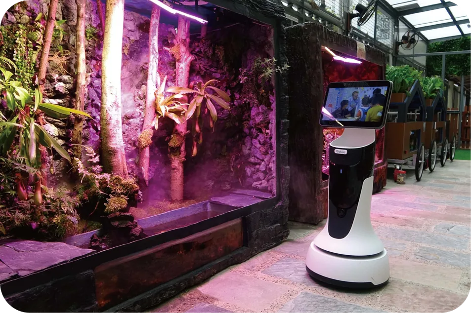

01
清潔安排難以配合課堂與活動
走廊、大堂、禮堂及公共空間需要反覆清潔，但人手及可用時段有限。
BottiZ 如何協助按區域、路線及校園時段安排清潔任務，支援不同大小及室內外空間。
由校園清潔、教材及物資運送，到訪客接待、智能圖書及互動學習，BottiZ 從學校日常流程出發，按場地、時段及人手需要配置合適方案。

BottiZ 先從校園常見任務與人手壓力出發，協助學校釐清最需要改善的環節，再規劃合適的機械人配置與使用方式。
走廊、大堂、禮堂及公共空間需要反覆清潔，但人手及可用時段有限。
校務處、教員室、課室及活動場地之間，經常需要運送文件、教具及物資。
校園介紹、方向查詢及活動資訊往往需要教職員重複回應。
場地、路線、網絡及使用流程不同，單靠產品規格難以判斷是否適合。
以下以校園一天的不同時段示範應用情境，讓校方更容易理解機械人在日常流程中的實際角色與分工。
清潔機械人完成走廊、大堂及公共空間的例行清潔。
教材配送機械人協助運送文件、圖書、教具及日常物資。
互動機械人支援圖書介紹、學生導賞、語言表達及校本內容。
提供訪客接待、校園介紹、活動資訊及場地指引。
可先按校園常見任務了解應用方向，再查看對應機型、部署方式及示範安排，評估是否適合校內實際流程。

按空間大小、地面材質、人流及清潔時段，配置適合的室內或室內外清潔機械人。

分擔文件、圖書、教材、教具及活動物資的固定路線運送，減少重複搬運。

載入校本資訊及導賞內容，支援多語言查詢、校園介紹、方向指引及活動資訊。

配合圖書內容、語音互動、校園導賞及機械人課程，讓科技成為可參與的學習體驗。
由到校勘察、方案配置、實機示範，到培訓及售後支援，協助學校按實際需要逐步部署，讓機械人真正融入校園運作。
以下整理各款機械人的建議場景、功能重點及主要規格，方便校方按應用方向進一步比較。

室內外工業級清潔機械人
可於光線不足或人流較多的環境中定位及避障，適合校門、戶外通道、操場外圍、停車區及校園後勤範圍。

中小型設施多合一地板清潔機械人
機身小巧靈活，支援多合一地板清潔、零距離邊緣清潔及自動定點清洗，適合校內中小型室內空間。

大中型校園空間全自動清潔機械人
以全自動清潔及機械人隊伍管理減少人手操作，適合學校大堂、體育館、禮堂外及寬闊走廊。

通用送遞機械人
可在校務處、教員室、課室、圖書館及活動場地之間運送教材、文件、物資及餐飲，減少重複搬運與來回。

招待小專員
適合校門接待、訪客登記、校園介紹、圖書館導覽及互動教學，以多語言、觸控及語音功能提升校園服務。
機械人不是取代校園團隊，而是承接重複、耗力及可標準化的工序，讓人力回到更需要判斷、溝通與照顧的工作。
分擔長距離搬運、固定路線清潔及反覆來回，協助降低工友的體力負擔。
減少推拉重物、長時間彎腰及在戶外或濕滑區域持續工作的需要。
按預設路線、時段及區域執行任務，有助減少遺漏並保持服務一致。
加快教材、文件及物資在校內流轉，讓教職員減少非教學性來回。
結合校園導賞、圖書內容、語言互動及機械人課程，提升參與感與科技素養。
將人工智能、自主導航及服務機械人應用於真實校園，展示創新及科技教育成果。
告訴我們希望改善的區域、日常工作及校園時段，團隊會先了解場地，再建議合適機型、部署方式及示範方向。
為教育、商業、醫療及基礎設施提供清潔、配送、接待、教學及巡邏等全場景機械人整合方案。